Batman is a superhero who appears in American comic books published by DC Comics.
Batman was created by artist Bob Kane and writer Bill Finger,
and debuted in the 27th
issue of the comic book Detective Comics on March 30, 1939.

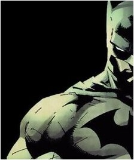
THE DARK KNIGHT
BATMAN
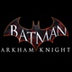
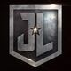
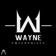
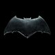
BAT - FAMILY
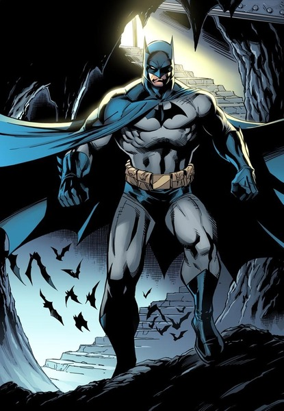
BRUCE WAYNE - BATMAN
In the DC Universe continuity, Batman is the alias of Bruce Wayne, a wealthy American playboy,
philanthropist, and industrialist who resides in Gotham City.
Batman's origin story features him swearing vengeance against criminals after witnessing the
murder
of his parents Thomas and Martha;
he trains himself physically and intellectually, crafts a bat-inspired persona, and monitors the
Gotham streets at night. Kane, Finger,
and other creators accompanied Batman with supporting characters, including his sidekick Robin;
allies Alfred Pennyworth, James Gordon, and Catwoman;
and foes such as the Penguin, the Riddler, Two-Face, and his archenemy, the Joker.
Kane conceived Batman in early 1939 to capitalize on the popularity of DC's Superman; although
Kane
frequently claimed sole creation credit, Finger substantially developed the concept from a
generic
superhero into something more bat-like. The character received his own spin-off publication,
Batman,
in 1940.
DICK GRAYSON - NIGHTWING
Nightwing is a fictional character and superhero appearing in American comic books published by
DC
Comics. The character has appeared in various incarnations; the identity was adopted by Dick
Grayson
when he left his role as Batman's vigilante partner Robin.
Although Nightwing is commonly associated with Batman, the title and concept have origins in
classic
Superman stories. The original Nightwing in DC Comics was an identity assumed by alien superhero
Superman when stranded on the Kryptonian city of Kandor with his friend Jimmy Olsen. Drawing
inspiration from Batman and Robin, the two protect Kandor as the superheroes Nightwing and
Flamebird. Following the Crisis on Infinite Earths continuity reboot in 1985, Nightwing was
re-imagined as a legendary vigilante from Krypton whose story inspires Dick Grayson's choice of
name
when he leaves behind his Robin identity
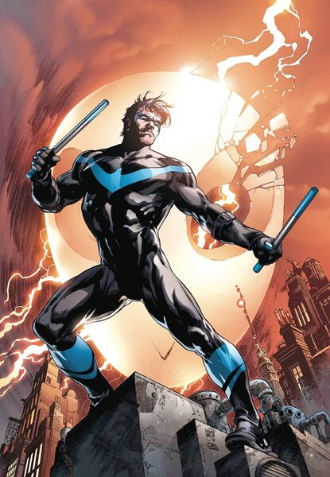
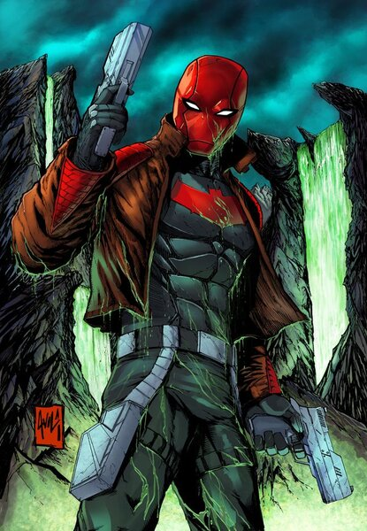
JASON TOOD - RED HOOD
The Red Hood first appeared in Detective Comics #168 (February 1951), in the story "The Man
Behind
The Red Hood!". In this original continuity, he became the future Joker; a flashback reveals
that
a criminal, who at that time called himself the Red Hood after the (seemingly) eyeless red
dome-shaped hood worn by him, attempted to rob a playing card factory. While chased, he fell
into a
catch basin full of chemicals, which disfigured him, then escaped by swimming to safety (a
breathing
apparatus inside the hood preventing him from drowning). Driven insane by his change of
appearance,
he recreates himself as the Joker. A decade later, the Joker resumes the guise, while another
criminal attempts to adopt the identity, too.
In Batman: The Killing Joke, writer Alan Moore added the new detail that the future Joker, at
that
time a cash-strapped, unsuccessful comedian, had been made to adopt the Red Hood guise by a gang
of
criminals so that he could play the patsy for them. This story presented a darker version of the
origin and introduced the idea that the Joker acted as an unreliable narrator concerning his own
past.
BARBARA GORDAN - BATGIRL
Batgirl is the name of several fictional superheroines appearing in American comic books
published by
DC Comics, depicted as female counterparts to the superhero Batman. Although the character Betty
Kane was introduced into publication in 1961 by Bill Finger and Sheldon Moldoff as Bat-Girl, she
was
replaced by Barbara Gordon in 1967, who later came to be identified as the iconic Batgirl. The
character debuted in Detective Comics #359 (January 1967) by writer Gardner Fox and
artist Carmine Infantino, introduced as the daughter of police commissioner James Gordon.
Batgirl operates in Gotham City, allying herself with Batman and the original Robin, Dick
Grayson,
along with other masked vigilantes. The character appeared regularly in Detective Comics, Batman
Family, and several other books produced by DC until 1988. That year, Barbara Gordon appeared in
Barbara Kesel's Batgirl Special #1, in which she retires from crime-fighting. She subsequently
appeared in Alan Moore's graphic novel Batman: The Killing Joke where, in her civilian identity,
she
is shot by the Joker and left paraplegic. Although she is reimagined as the computer expert and
information broker Oracle by editor Kim Yale and writer John Ostrander the following year.
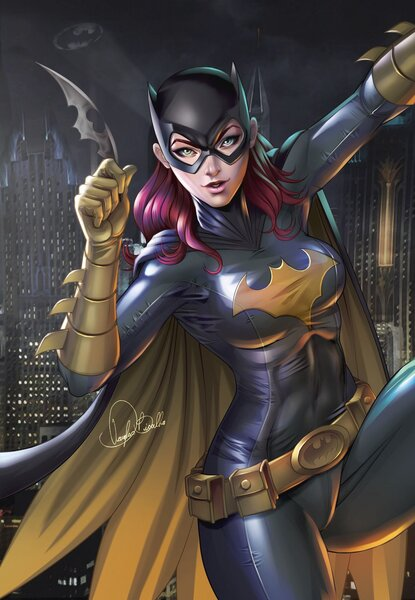
COMIC & GRAPHIC NOVEL
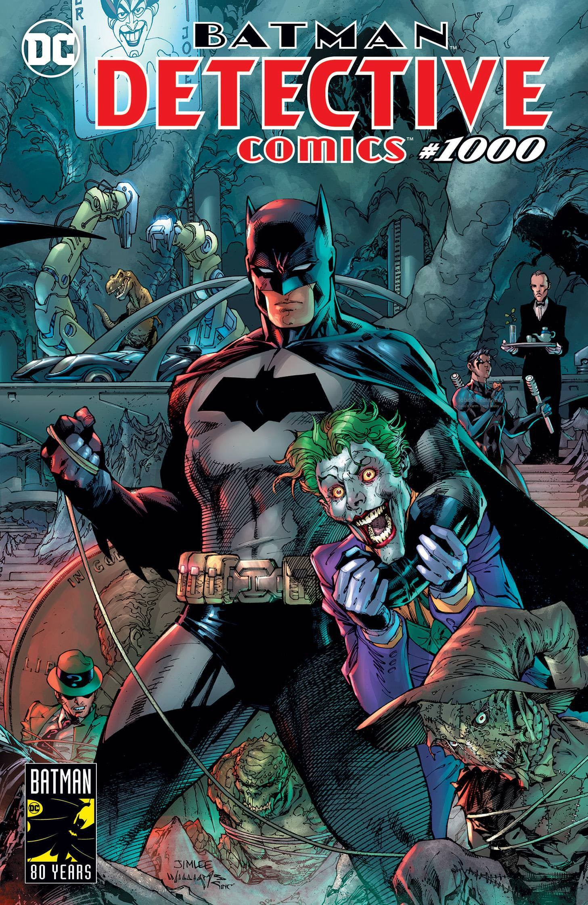
BATMAN DETECTIVE COMICS #1000
AVAILABLE NOW
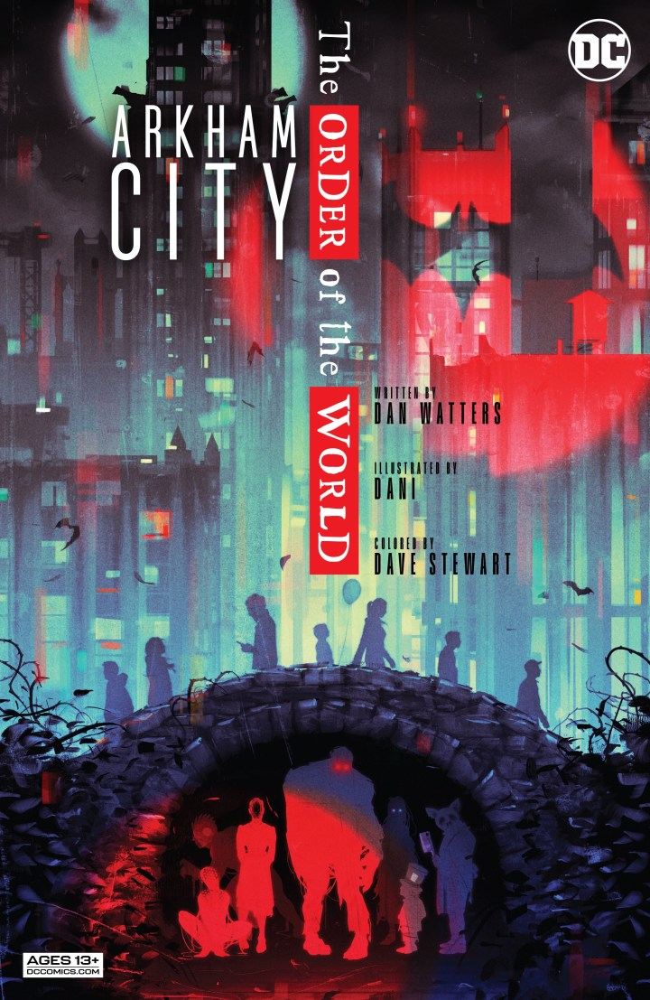
ARKHAM CITY - THE ORDER OF THE WORD
AVAILABLE NOW

BATMAN DETECTIVE - BATMAN ETERNAL
AVAILABLE NOW

BEGINING OF TOMORROW
AVAILABLE NOW

BATMAN DETECTIVE : VOL #6
AVAILABLE NOW

BATMAN DETECTIVE - ON THE OUTSIDE
AVAILABLE NOW
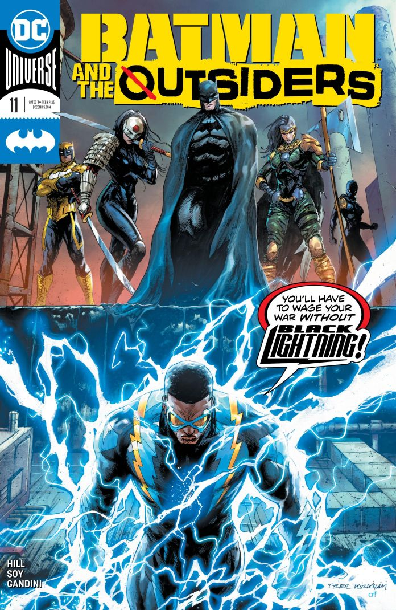
BATMAN OUTSIDER
AVAILABLE NOW
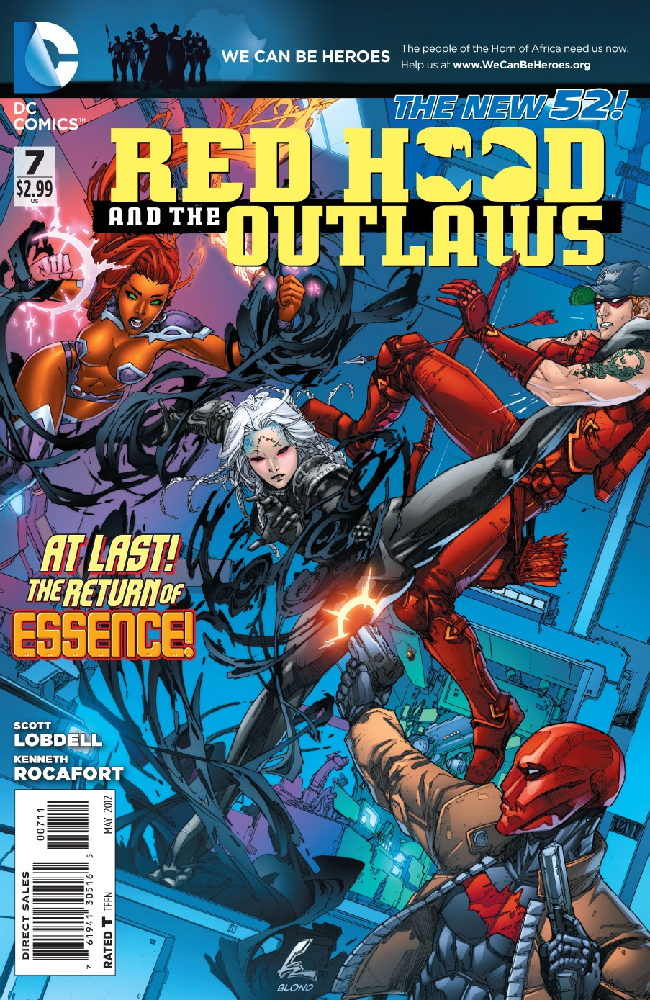
REDHOOD AND THE OUTLAW : VOL #7